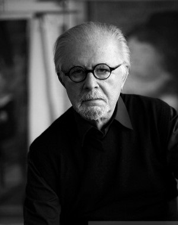

Fernando Botero
Fernando Botero é um artista figurativista colombiano, chamado por alguns de "Boterismo", o que lhes dá uma identidade inconfundível. Suas obras destacam-se sobretudo por figuras rotundas, o que pode sugerir a estaticidade da humanidade. Percebe-se a sua escultura como uma crítica social, especialmente no que diz respeito à ganância do ser humano. Nos anos 50 ele estudou em Madrid, onde expos aos mestres espanhóis o seu interesse por arte pré-colombiana, colonial espanhola e pelos temas políticos do muralista mexicano Diego Rivera. A sua primeira exposição foi em 1951, em Bogotá, mas a sua formação teve início em 1953, quando ingressou na Academia de San Marco, em Florença. Botero, se lançou ao mundo com a releitura da famosa obra de Jan van Eyck, O Casal Arnolfini, em seu quadro dominavam as formas redondas, assim como fez com a famosa Mona Lisa de Leonardo da Vinci. O artista doou 23 esculturas à cidade de Medellín, sua terra natal. Elas estão exposta em praça pública, que foi renomeada com o nome do artista. É um dos pontos turísticos mais procurados na cidade colombiana.
1943